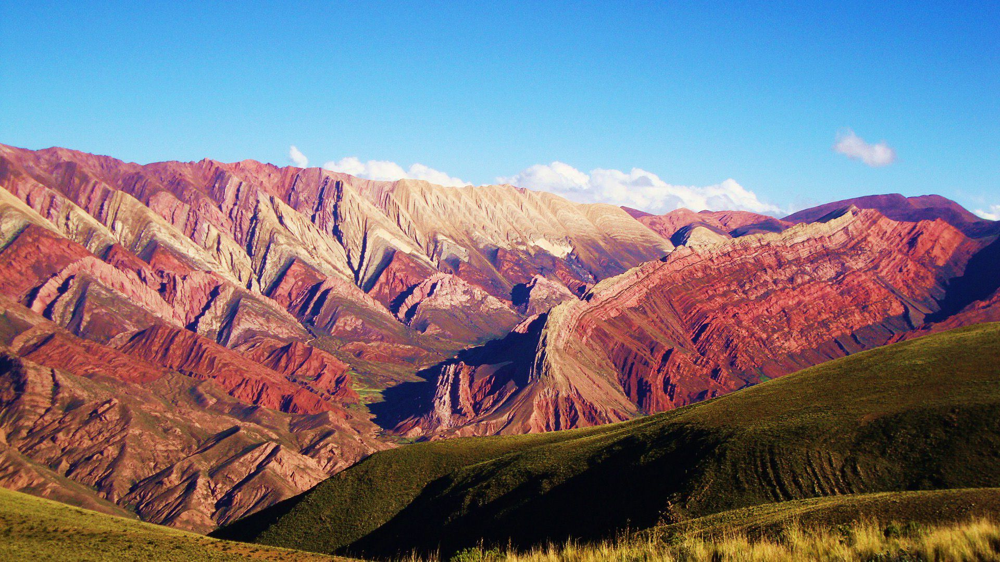

Explorá Nuestros Destinos
Filtrá por categorías y descubrí los rincones más hermosos de Jujuy.



Comparativa de Destinos Sugeridos
| Destino | Tipo de Turismo | Duración Recomendada | Precio Estimado (ARS) |
|---|---|---|---|
| Quebrada de Humahuaca | Cultural / Naturaleza | 3 - 4 Días | $ 150.000 |
| Salinas Grandes | Naturaleza / Fotografía | 1 Día | $ 45.000 |
| Reserva Biosfera Yungas | Aventura / Naturaleza | 2 Días | $ 80.000 |
| Diques de El Carmen | Sol y Playa / Relax | 1 Día | $ 30.000 |